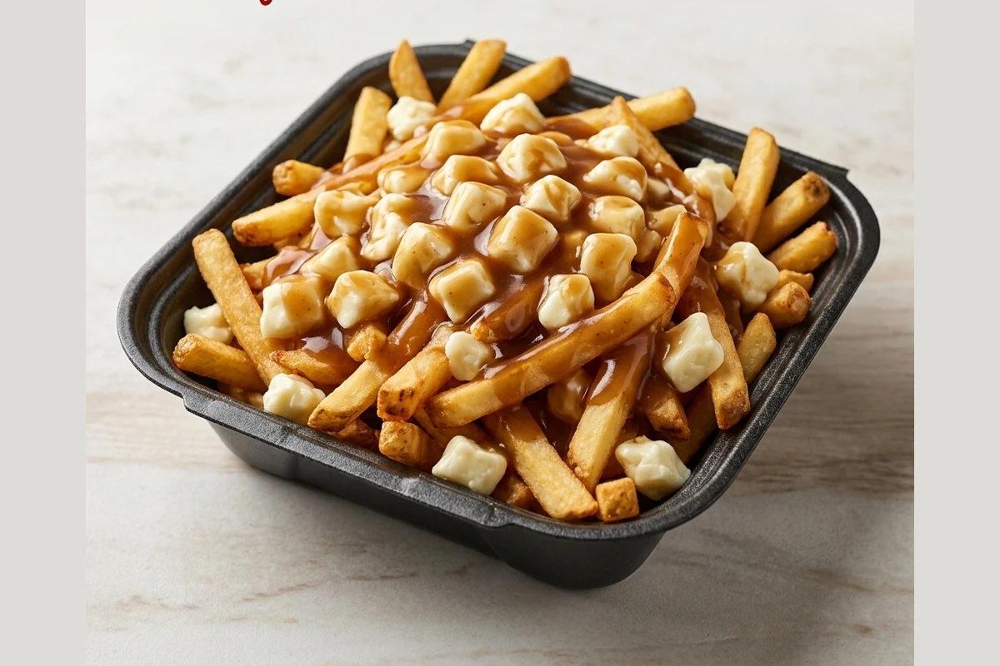

Fresh-cut fries piled with squeaky cheese curds and covered in hot savoury gravy — the Canadian classic done right. Add seasoned chicken shawarma for our Shawarma Poutine. A Queen's Pizza & Wings late-night favourite in Hamilton.

Poutine is the side that turns a wing order into a proper meal. We start with fresh-cut fries, pile them with cheese curds, then cover the whole thing in hot savoury gravy so the curds go soft and stringy under the heat.
Want it as a meal on its own? The Shawarma Poutine adds seasoned chicken shawarma over the same fries, curds, and gravy. Order either for pickup, delivery, or dine-in, and round out the order with Onion Rings, Mozzarella Sticks, or Garlic Bread for a full Hamilton comfort-food spread.
Craving poutine near Beasley, Strathcona, or Central Hamilton? Queen's Pizza & Wings on Queen Street South serves Hamilton's downtown core and surrounding neighbourhoods with fast, reliable takeout, delivery, dine-in, and catering. Order online for pickup or delivery, or call (905) 577-0900 — we're open daily from 11:00 AM to 3:00 AM, so a hot poutine is on the table well past midnight.
Verified Google Review
"Everything was very tasty and delicious. The gluten-free is one of the best I have had thank you! I will order again."
Verified Google Review
Google Review
"Great food and delivered with care!"
Verified Google Review
Queen's Pizza & Wings serves the best poutine in Hamilton from our Queen Street South location. We're a locally run pizza and wings shop known for hot, fresh comfort food, fast takeout, delivery, and dine-in throughout the downtown core.
Yes. We deliver poutine across Downtown Hamilton and nearby neighbourhoods including Beasley, Strathcona, and Central Hamilton. Order online or call (905) 577-0900 to confirm delivery to your address.
Our Poutine starts with fresh-cut fries, piled with cheese curds and covered in hot savoury gravy so the curds soften on the way to you. Prefer something heartier? Order the Shawarma Poutine, topped with seasoned chicken shawarma.
Yes, we're open every day from 11:00 AM to 3:00 AM, so you can order poutine for pickup or delivery any time, including well after last call.
Get directions to our Queen Street South location or order poutine straight to your door.
178 Queen St S
Hamilton, ON L8P 3S7
Open Daily: 11:00 AM – 3:00 AM